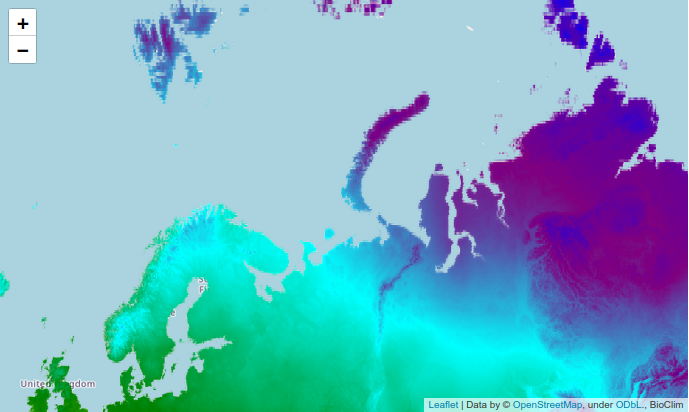
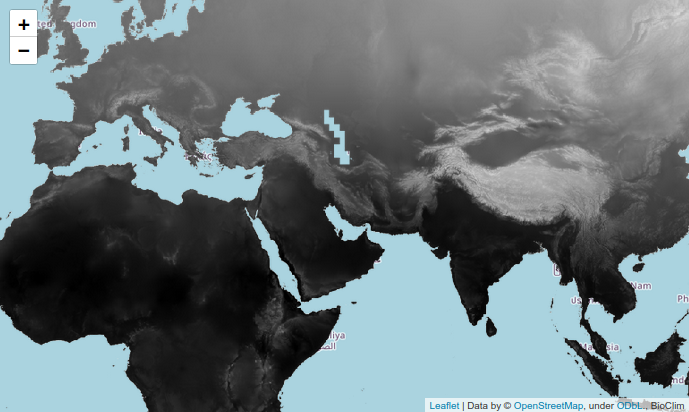
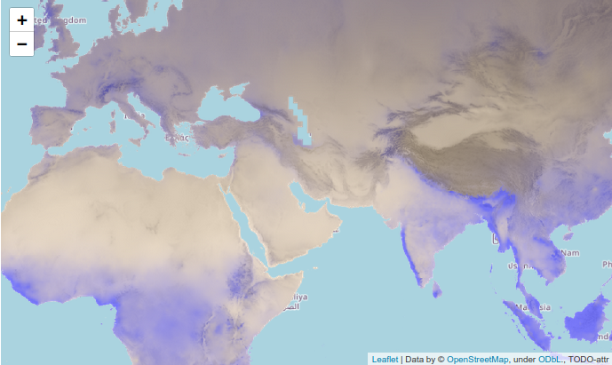

Exploring ee data
Datasets
Datasets can be a vector
FeatureCollection, an Image or an ImageCollection. The first is GeoJson,
while the latter two are rasters, which we’ll focus on here.
An Image represents a single image in which values are assigned to grid
cells on a map. It can contain multiple bands (layers) that describe
different measurements represented on the same image. For example, an Image
could contain a temperature band with float values between -300 and 300
representing degrees Celsius, and it could also contain a band with boolean
values showing forest cover and present or absent. You should read the
description of the Image in the data catalog to learn what bands it contains,
their dtype, and the range of values represented. An Image could include any
arbitrary collection of bands. You could even create your own Image and upload
it for others to use.
An ImageCollection represents multiple Images taken at different time periods,
and which share the same metadata properties, meaning they will be the same size
and contains the same bands of data. ImageCollections are used to compute or
visualize how measurements change over time.
BioClim dataset V1
Let’s load and investigate a raster Image dataset. This one is called the WORLDCLIM or BIOCLIM dataset, and is widely used for modeling species distributions in ecology since it includes a bunch of biologically relevant temperature and precipitation variables. The link below provides information on the bands, including their dtype (e.g., int, float) and the range of values present (e.g., 0 to 100, or -10000 to 10000). https://developers.google.com/earth-engine/datasets/catalog/WORLDCLIM_V1_BIO#bands.
# load a dataset image
bioclim = ee.Image("WORLDCLIM/V1/BIO")
The bottom of the data catalog page includes a set of instructions for making one simple visualization of the dataset, so let’s start with that, and try to understand exactly what is happening when we draw this image. As you can see the code I wrote below is a Python translation of the JS code that they provide.
# select the first band
mean_annual_temp = bioclim.select('bio01');
# make a map
emap = EngineMap(location=[71, 52], zoom_start=3)
# add the raster
emap.add_ee_raster(
image=mean_annual_temp,
name="Annual Mean Temperature",
attr="BioClim",
vis_params={
"min": -230,
"max": 300,
"palette": ['blue', 'purple', 'cyan', 'green', 'yellow', 'red'],
},
)

To draw the map in this example we used the .select function of the Image
to choose just one band to show. The ‘bio01’ band contains values in the
range -230 to 300, and so in the add_ee_raster function we tell it a set
of arguments for how to transform the existing values into a range of colors
to be shown as a bitmap. This says to make values at -230 blue, and values
at 300 red, with intermediate values scaled in a range by the set of colors
listed in between.
This is just one way to select this band, and to choose how to draw it. We could similarly select the band as a vis param, and we could provide a different palette to describe how to show the values. Here’s an example in black and white.
# make a map
emap = EngineMap(location=[30, 52], zoom_start=3)
# add the raster
emap.add_ee_raster(
image=bioclim,
name="Annual Mean Temperature",
attr="BioClim",
vis_params={
"bands": ['bio01'],
"min": -230,
"max": 300,
"palette": ['white', 'black'],
},
)

Similarly, we could add additional bands to the map as separate raster layers. Here I add a second bioclim variable as a raster, and set its visual params to match to its range of values as well. When showing multiple bands we could change their opacity so that both are visible at the same time, or we could have each show a different color and combine them, or we could turn on LayerControl, as I did in this case so that the user can toggle which to show.
# make a map
emap = EngineMap(location=[30, 52], zoom_start=3)
# add the raster
emap.add_ee_raster(
image=bioclim,
name="Annual Mean Temperature",
attr="BioClim",
vis_params={
"bands": ['bio01'],
"min": -230,
"max": 300,
"palette": ['white', 'black'],
},
)
# add the raster
emap.add_ee_raster(
image=bioclim,
name="Mean diurnal range",
attr="BioClim",
vis_params={
"bands": ['bio02'],
"min": 9,
"max": 214,
"palette": ['white', 'black'],
},
)
# allow toggling the layers
emap.add_child(folium.LayerControl())
emap
Mapping bands to colors
A common usage of bands in images is to create composite images where different
colors are mapped to different bands of the image. In fact, the default behavior
of raster images when you pass multiple bands is to treat the bands as red, blue,
and green layers, where the values represent magnitudes of each color. Under
the hood, this is what happens when you draw a raster, it takes the vis_params
that you provide and converts the data values into three bands representing
red, blue and green to make a colored image. Even if your vis_params say to
plot the image in black and white, it represents greyish values by a combination
of rbg values over three bands. This can be seen by using the .visualize()
function of an Image, which is used under the hood when plotting a raster.
This is the function that converts images to rbg, and it can be useful to
learn for operations like making new images.
Let’s first look at the bands that are in our image.
# returns a dict showing that there are 19 bands of dtype float
bioclim.bandTypes().getInfo()
Here I create a new Image by mapping the values from the bio01 band in the range -300 to 300 as white to black. The returned Image will contain three bands with the visualized data as a rbg image. You can see there are now three bands in the range 0-255. This dtype (bytes) is the default in ee for representing colored images.
# get new Image of bio01 visualized with these vis-params
new = bioclim.visualize(bands="bio01", min=-300, max=300, palette=['white', 'black'])
# now check the bandTypes
new.bandTypes().getInfo()
{'vis-blue': {'type': 'PixelType', 'precision': 'int', 'min': 0, 'max': 255},
'vis-green': {'type': 'PixelType', 'precision': 'int', 'min': 0, 'max': 255},
'vis-red': {'type': 'PixelType', 'precision': 'int', 'min': 0, 'max': 255}}
Creating modified Image objects
Let’s imagine we wanted to show two bands of the BioClim dataset, but we want
to generate a very specific way of combining the variables into an image. Let’s
say I wanted to show the mean-temp as a black and white layer, and over
that I want precipitation to appear as tan to blue. So cold and dry regions
will be dark and tan, and warm wet areas will be light and blue.
It will be faster
to visualize this dataset if we combine it into one raster image rather than
plotting two separate layers with an opacity overlay. We can combine the two
bands using Image computations. In this case I use .add() to add their values
together on the three colored layers. The new image is then in the range of
integer values 0-510. We could either visualize this image by setting vis_param
settings to range over that domain, or as I do here, convert the image back to
the range 0-255.
# create an rgb image as dark/light for temperature
new_mean_temp = bioclim.visualize(
bands="bio01",
min=-300,
max=300,
palette=["black", "white"],
)
# create an rgb image as tan/blue for precip
new_precip = bioclim.visualize(
bands='bio12',
min=0,
max=3000,
palette=["tan", "blue"],
)
# sum the two images to combine. The new values will be in range 0-510
# since each image was in range (0-255) at each r,g,b band.
new_image = new_mean_temp.add(new_precip)
# convert it back to 0-255 range and ensure it is byte type
new_image = new_image.divide(2).toByte()
# create map and add the new image raster
emap = EngineMap(location=[30, 52], zoom_start=3)
emap.add_ee_raster(new_image)
emap

Summary
There is so much you can do with Image and ImageCollection data. I encourage you to explore any tutorials you can find online, especially in the ee documentation for further examples. There you will find many more operations than were shown here, including masking, clustering, converting raster to vectors, or vectors to rasters, machine learning, time-series analysis, and many more visualization tricks.
This tutorial will probably take about 60 minutes to complete. The main challenge is in figuring out how to translate the JS into Python code. Revisit the ee docs on [translating between JS and Python](https://developers.google.com/earth-engine/guides/python_install#syntax). And use your knowledge of what valid Python code should look like.
You should complete the tutorial in a jupyter notebook. To visualize the maps with `folium` be sure to copy and paste in the definition of our EarthEngine class definition (from the last tutorial) for adding ee layers to a folium Map.
When you finish the tutorial you should have produced a map like the one in the end of the tutorial. When you add the raster to your EngineMap be sure to include the argument `attr=yourname` to it. This will make your name show up in the lower-right corner attribution of the raster layer, confirming that you created the map. For example:
emap = EngineMap()
emap.add_ee_raster(image, vis_params={...}, attr="Deren")
More resources
Here are some more Python ee notebook repos with further examples: